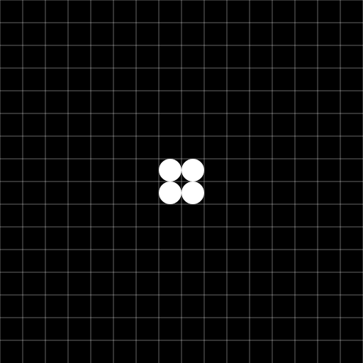

The RAD Image Format
A project I'm working on (codename: RAD) needs to pull artwork from a server, the artwork is simple on/off pixels in a grid and rather than link to an image URL I'm going to embed the image data in the main JSON payload.
Representing a 16x16 image naively in a simple string could look like:
0110111011000100100010101010101010001010110011101000101010101010011011101010101000000000000000000110100011100000100010001000000010001000111000001000100010000000011011101110000000000000000000000000000000000000000000000000000000000000000000000000000000000000
That linear array of characters can be translated to a 16x16 image, or used as matrix data for a larger representation:

This is how some old image formats worked, see NetPBM and X PixMap, but there's a lot of repetition with this basic representation. We can improve the size by using X for black, W for white, and Xn or Wn for black n-pixels and white n-pixels, eg. X4 which is equivalent to 0000 above. We need to substitute W for 1 and X for 0 so the encoded image can be read; you couldn't know if 0111 was supposed to represent one hundred and eleven 'off' pixels or 1 off pixel followed by 3 on. Using the new system gives:
XW2XW3XW2X3WX2WX3WXWXWXWXWXWXWX3WXWXW2X2W3XWX3WXWXWXWXWXWX2W2XW3XWXWXWXWX18W2XWX3W3X5WX3WX3WX7WX3WX3W3X5WX3WX3WX8W2XW3XW3X85
That's a big saving, 124 characters compared to 256, you can see the last unit is X85, that's 85 blank pixels and is 3 characters rather than 85 0s in the original example. Looking at the image we can see the bottom 5 rows are empty and there are 5 pixels after the bottom the of E: (5 * 16) + 5 = 85
A Reusable Format
The encoding described above works for the specific use-case of a 16x16 grid with just on and off pixels, but with a little more work we can create a general use format (although losing some efficiency in the process). Before the image data we specify the image dimensions, and add a colour dictionary, and a delimiter for the shorthand sections:
16x16:#0#f:0|1.2|0|1.3|0|1.2|0.3|1|0.2|1|0.3|1010101010101|0.3|1010|1.2|0.2|1.3|01|0.3|10101010101|0.2|1.2|0|1.3|01010101|0.18|1.2|01|0.3|1.3|0.5|1|0.3|1|0.3|1|0.7|1|0.3|1|0.3|1.3|0.5|1|0.3|1|0.3|1|0.8|1.2|0|1.3|0|1.3|0.85
Image Dimensions Prefex
The first prefix section is the image dimensions, we could just supply the width here and the computer could figure out the height based on the image data, but to keep the format human-readable we supply the height too.
Colour Dictionary Prefix
The second prefix section is the colour dictionary. Colours can be represented using #f, or #f0c or #00ccff formats. #f, #fff, and #ffffff are all equivalent. The main image data block then references these dictionary colours by index.
Modes
If the dictionary size is less than ten we can use the concise mode above with dictionary indexes written in a contiguous block: 10101 (white, black, white, black, white), once the dictionary size is ten or bigger that obviously won't work so each pixel will need the pipe delimiter: 1|0|1|0|1.

Is having these modes worth it? For a 16x16 image with pixels alternating black and white (maximum entropy for a monochrome image using our basic compression technique) compare the difference, with contiguous blocks where dictionary size is less than 10:
16x16:#0#f:101010101010101|0.2|10101010101010|1.2|01010101010101|0.2|10101010101010|1.2|01010101010101|0.2|10101010101010|1.2|01010101010101|0.2|10101010101010|1.2|01010101010101|0.2|10101010101010|1.2|01010101010101|0.2|10101010101010|1.2|01010101010101|0.2|10101010101010|1.2|01010101010101|0.2|101010101010101
and without having the mode switch:
16x16:#0#f:1|0|1|0|1|0|1|0|1|0|1|0|1|0|1|0.2|1|0|1|0|1|0|1|0|1|0|1|0|1|0|1.2|0|1|0|1|0|1|0|1|0|1|0|1|0|1|0.2|1|0|1|0|1|0|1|0|1|0|1|0|1|0|1.2|0|1|0|1|0|1|0|1|0|1|0|1|0|1|0.2|1|0|1|0|1|0|1|0|1|0|1|0|1|0|1.2|0|1|0|1|0|1|0|1|0|1|0|1|0|1|0.2|1|0|1|0|1|0|1|0|1|0|1|0|1|0|1.2|0|1|0|1|0|1|0|1|0|1|0|1|0|1|0.2|1|0|1|0|1|0|1|0|1|0|1|0|1|0|1.2|0|1|0|1|0|1|0|1|0|1|0|1|0|1|0.2|1|0|1|0|1|0|1|0|1|0|1|0|1|0|1.2|0|1|0|1|0|1|0|1|0|1|0|1|0|1|0.2|1|0|1|0|1|0|1|0|1|0|1|0|1|0|1.2|0|1|0|1|0|1|0|1|0|1|0|1|0|1|0.2|1|0|1|0|1|0|1|0|1|0|1|0|1|0|1
Thats 312 versus 522 characters, a huge saving, and images with fewer than 10 colours will be standard for my use case.
With this format the following image can be represented as: 16x16:#0#f:0.119|1.2|0.14|1.2|0.119

You can create images in the RAD Image format using a Coracle drawing:
Realworld Example
The image below is the ouput of the Coracle RAD Image Convertor, the tiny 16x16 .png is 294bytes, as a RAD image it's 302 bytes

16x16:#efebe9#4d40#689f38#2e7d32#212121:0.3|1.10|0.5|123|2.2|3.2|2.2|3.2|1|0.4|1|2.9|31|0.4|13|2.8|31|0.4|1324|2.2|4|2.3|31|0.4|1324|2.2|4|2.3|31|0.4|13|2.8|31|0.4|1|3.4|2.2|3.4|1|0.5|1.10|0.6|1|3.8|1|0.6|13|2.6|31|0.5|1213|2.4|3121|0.4|1.3|3|2.4|3|1.3|0.6|1|3.2|2.2|3.2|1|0.8|13|1.4|31|0.8|1.2|0.4
Worst Case Scenario
What's the worst case scenario for this format: 256 unique colours where each pixel in the image data points to a different dictionary index:
16x16:#000000#010101#020202#030303#040404#050505#060606#070707#080808#090909#0a0a0a#0b0b0b#0c0c0c#0d0d0d#0e0e0e#0f0f0f#101010#111111#121212#131313#141414#151515#161616#171717#181818#191919#1a1a1a#1b1b1b#1c1c1c#1d1d1d#1e1e1e#1f1f1f#202020#212121#222222#232323#242424#252525#262626#272727#282828#292929#2a2a2a#2b2b2b#2c2c2c#2d2d2d#2e2e2e#2f2f2f#303030#313131#323232#333333#343434#353535#363636#373737#383838#393939#3a3a3a#3b3b3b#3c3c3c#3d3d3d#3e3e3e#3f3f3f#404040#414141#424242#434343#444444#454545#464646#474747#484848#494949#4a4a4a#4b4b4b#4c4c4c#4d4d4d#4e4e4e#4f4f4f#505050#515151#525252#535353#545454#555555#565656#575757#585858#595959#5a5a5a#5b5b5b#5c5c5c#5d5d5d#5e5e5e#5f5f5f#606060#616161#626262#636363#646464#656565#666666#676767#686868#696969#6a6a6a#6b6b6b#6c6c6c#6d6d6d#6e6e6e#6f6f6f#707070#717171#727272#737373#747474#757575#767676#777777#787878#797979#7a7a7a#7b7b7b#7c7c7c#7d7d7d#7e7e7e#7f7f7f#808080#818181#828282#838383#848484#858585#868686#878787#888888#898989#8a8a8a#8b8b8b#8c8c8c#8d8d8d#8e8e8e#8f8f8f#909090#919191#929292#939393#949494#959595#969696#979797#989898#999999#9a9a9a#9b9b9b#9c9c9c#9d9d9d#9e9e9e#9f9f9f#a0a0a0#a1a1a1#a2a2a2#a3a3a3#a4a4a4#a5a5a5#a6a6a6#a7a7a7#a8a8a8#a9a9a9#aaaaaa#ababab#acacac#adadad#aeaeae#afafaf#b0b0b0#b1b1b1#b2b2b2#b3b3b3#b4b4b4#b5b5b5#b6b6b6#b7b7b7#b8b8b8#b9b9b9#bababa#bbbbbb#bcbcbc#bdbdbd#bebebe#bfbfbf#c0c0c0#c1c1c1#c2c2c2#c3c3c3#c4c4c4#c5c5c5#c6c6c6#c7c7c7#c8c8c8#c9c9c9#cacaca#cbcbcb#cccccc#cdcdcd#cecece#cfcfcf#d0d0d0#d1d1d1#d2d2d2#d3d3d3#d4d4d4#d5d5d5#d6d6d6#d7d7d7#d8d8d8#d9d9d9#dadada#dbdbdb#dcdcdc#dddddd#dedede#dfdfdf#e0e0e0#e1e1e1#e2e2e2#e3e3e3#e4e4e4#e5e5e5#e6e6e6#e7e7e7#e8e8e8#e9e9e9#eaeaea#ebebeb#ececec#ededed#eeeeee#efefef#f0f0f0#f1f1f1#f2f2f2#f3f3f3#f4f4f4#f5f5f5#f6f6f6#f7f7f7#f8f8f8#f9f9f9#fafafa#fbfbfb#fcfcfc#fdfdfd#fefefe#ffffff:0|1|2|3|4|5|6|7|8|9|10|11|12|13|14|15|16|17|18|19|20|21|22|23|24|25|26|27|28|29|30|31|32|33|34|35|36|37|38|39|40|41|42|43|44|45|46|47|48|49|50|51|52|53|54|55|56|57|58|59|60|61|62|63|64|65|66|67|68|69|70|71|72|73|74|75|76|77|78|79|80|81|82|83|84|85|86|87|88|89|90|91|92|93|94|95|96|97|98|99|100|101|102|103|104|105|106|107|108|109|110|111|112|113|114|115|116|117|118|119|120|121|122|123|124|125|126|127|128|129|130|131|132|133|134|135|136|137|138|139|140|141|142|143|144|145|146|147|148|149|150|151|152|153|154|155|156|157|158|159|160|161|162|163|164|165|166|167|168|169|170|171|172|173|174|175|176|177|178|179|180|181|182|183|184|185|186|187|188|189|190|191|192|193|194|195|196|197|198|199|200|201|202|203|204|205|206|207|208|209|210|211|212|213|214|215|216|217|218|219|220|221|222|223|224|225|226|227|228|229|230|231|232|233|234|235|236|237|238|239|240|241|242|243|244|245|246|247|248|249|250|251|252|253|254|255